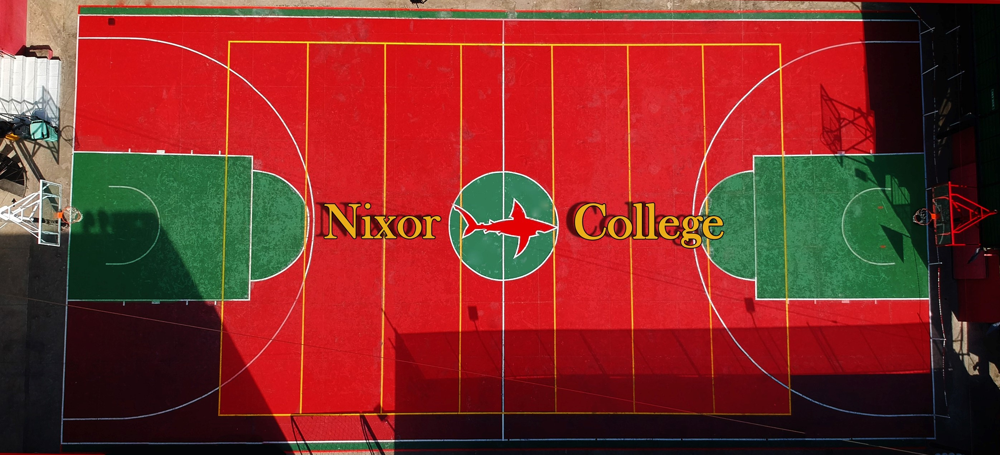
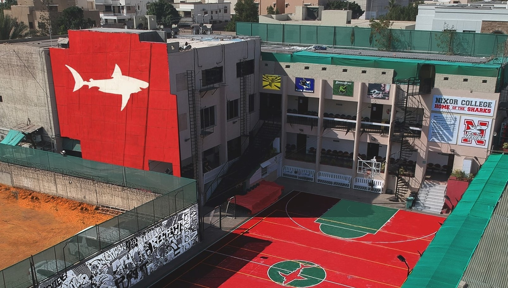

Established in 2008, Nixor College is a certified A Level school (registration number PK649). It is recognized by the British Council as one of the best A Level colleges in the country because of its comprehensive approach to a high quality educational program. It was founded in 2008 by Nadeem Ghani, Nasir Ghani, Naushad Karamali and a group of teachers. In recent years, the school has risen up the tables and has worked its way to become one of the best A'level schools in Pakistan through academic and co-curricular achievements, university placements, and teaching quality.
Nixor College will change the expectations Pakistan has from its leading educational institutions. Educational institutions have the responsibility of preparing our youth to make a positive impact on their own future and on that of the groups to which they belong – be it their families, their friends, or their nation. Clearly, personal academic achievement is of vital importance, but the ultimate goal in addition to academic accomplishment is grooming Leaders, capable of bringing positive change in society.
Introduce hundreds of leaders every year into the Pakistani society who are ready, willing and able to make a huge positive impact on the lives they touch.
Every day each one of us makes choices based on options – often conflicting options – that we have. It’s simple enough to say, “Just do the right thing”. The question is: how do we know what is right? One’s core values are what determine that right answer. The Nixor community adheres to the following Core Values in everything we do: